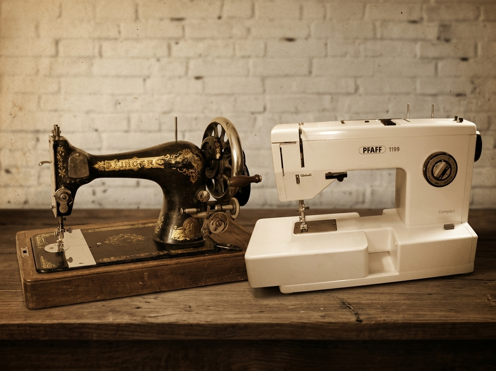

"A little bit of fabric, a lot of memories, and a dream that waited patiently.
Believe me, Patch & Posy is not the result of some grand business plan or a sudden entrepreneurial revelation. It is actually a dream that has been sitting with me for years, quietly waiting for its turn.
I have always been a curious person. Being the youngest daughter in my family, I loved being involved in everything happening around me. Whether it was helping my parents with everyday chores, trying something new, or simply watching and learning from them, I was always eager to do things myself. I loved role-playing, figuring things out and, of course, making things with my hands.
Somewhere along the way, though, life happened. Education, a professional career, growing responsibilities and taking care of my parents gradually took up most of my time. I went on to spend almost two decades in the IT industry, building my career as a professional in software quality. It has been a rewarding journey, and I have learnt a great deal from it. But there was always another side of me waiting patiently — the one that wanted to sit down with a piece of fabric, match a few colours and turn an idea into something beautiful for the home.
I have always believed that a home is not something you simply buy. It is something you make, little by little, with the things you choose, the memories you create and the love you put into it.
And if there is one person responsible for planting that love of making things in me, it is my mother.
As a child, I watched her sew and embroider, surrounded by colourful fabrics, threads and all the little things that made her sewing corner feel special. Her old Singer sewing machine was more than just a machine to me. It was where I first saw ordinary pieces of fabric turn into something useful, beautiful and full of meaning. My mother may not have known it then, but she was introducing me to something that would stay in my heart for the rest of my life.
She passed away many years ago, but the little spark she left in me never really went away. It simply waited for the right time to become a flame.
And then there was my father.
I often spoke to him about my wish to start something of my own, especially during the long hours we spent together during his dialysis sessions. Those conversations meant more to me than I can explain. He was a high-spirited man, and he never made me feel that my dream was too small, too late or too unrealistic. He listened, encouraged me and gave me the confidence to believe that I could do it.
Sadly, he did not get to see me take this step. I wish he were here to see Patch & Posy becoming real, to see the things I make and to know that I finally started. I like to think he would be happy to see me doing something I have talked about for so long. And perhaps, in my own way, every piece I make carries a little of that conversation forward.
So, here I am. After years in the IT industry, where logic, precision and problem-solving have been part of my everyday life, I am finally making room for the creative side of me that has been waiting patiently. My PFAFF sewing machine has taken its place beside all those old memories of my mother's Singer. Different machines, different times, but somehow the same feeling.
Patch & Posy is my little corner of the world where I get to explore that creativity — through patchwork, quilts, bedspreads, dastarkhwans, table linens, kitchen pieces and other things that make a home feel a little more like your own.
I love the thought that a tablecloth might become part of a family lunch, that a quilt might keep someone warm on a cold night, or that something as simple as a handmade piece might stay in a family home for years. These are not just products to me. They are things meant to be used, loved and lived with.
And no, I don't believe handmade has to mean using whatever scraps happen to be lying around. I choose good-quality fabrics, pay attention to the colours and details, and take the time to make each piece with care. My professional background has taught me to value precision and consistency, and those habits follow me into the sewing room, too. Apparently, even when I am being creative, the quality professional in me refuses to take a day off!
Patch & Posy is also my way of keeping a connection with the people who shaped me. My mother gave me the spark, my father encouraged the dream, and my mother-in-law was also an important part of the family whose love and values I carry with me. I am grateful to my husband for supporting me as I finally bring this long-held dream to life.
I know I am starting this chapter later than the little girl who once watched her mother sew. But perhaps that is the beauty of it. We don't always lose our dreams when life gets busy. Sometimes, we simply have to find our way back to them.
And this is me finding my way back.
Thank you for stopping by, for reading my story and for being part of this little beginning. Every visit, every order and every piece that finds a place in your home means more to me than you might imagine.
Welcome to Patch & Posy. I'm so glad you're here.
With love,
The hands, heart and slightly perfectionist mind behind Patch & Posy